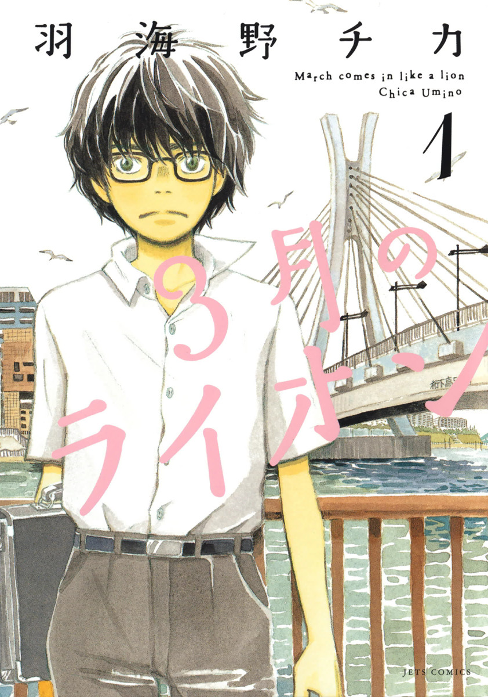
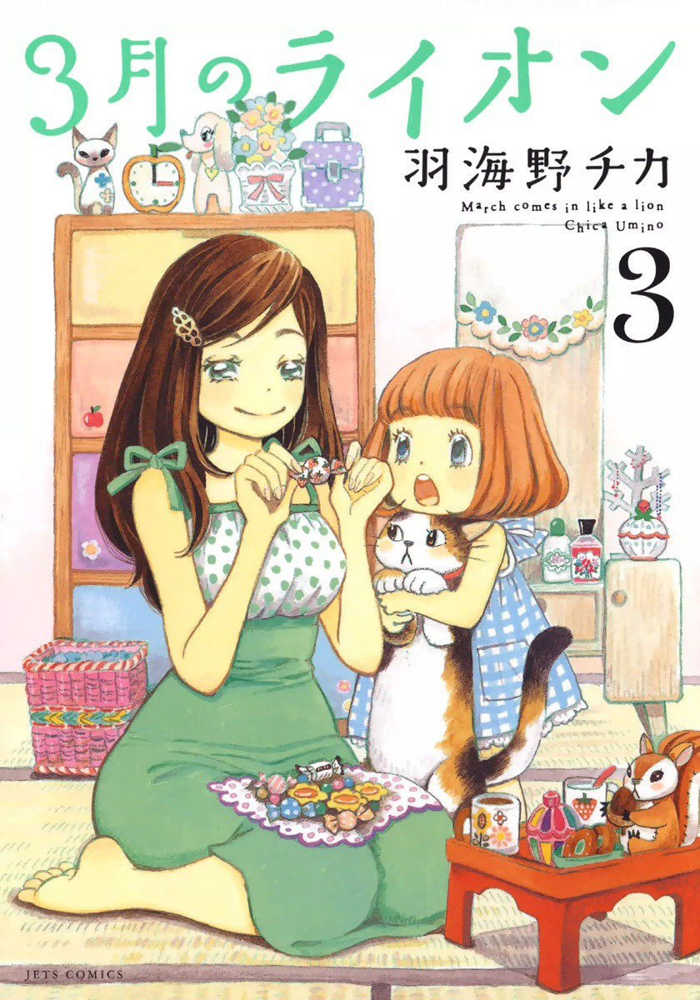
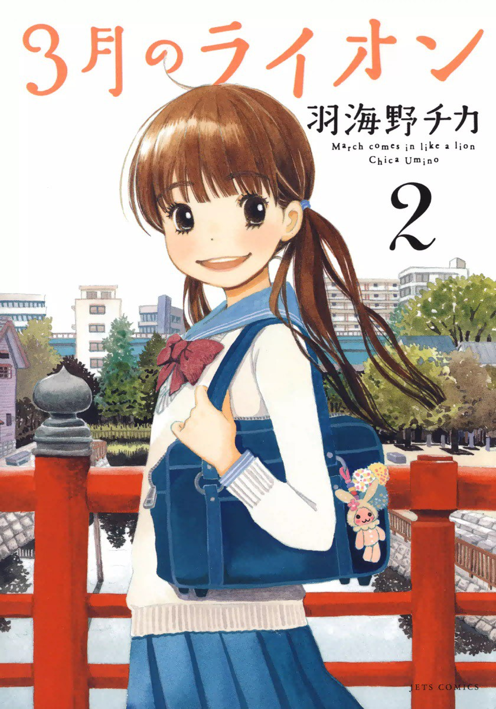
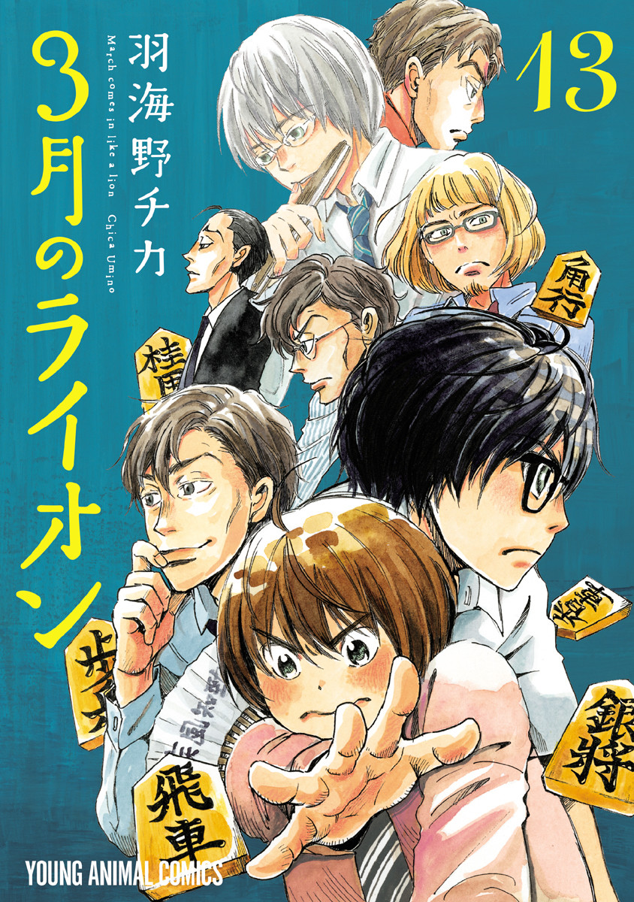
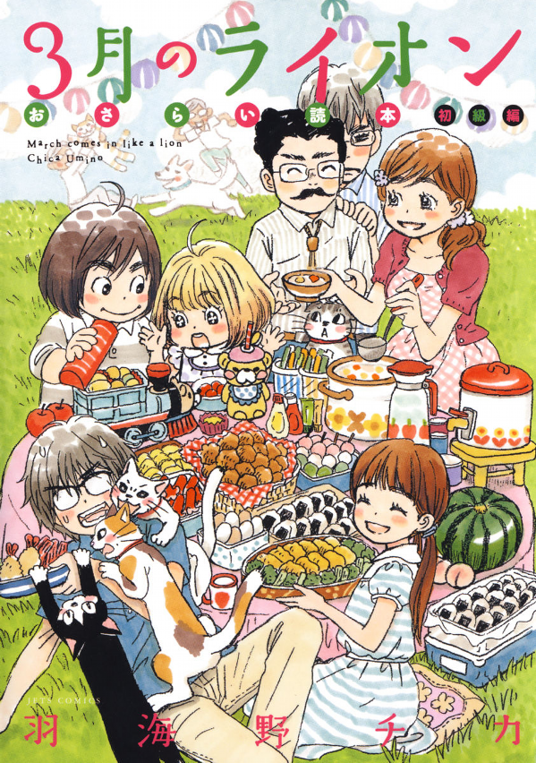

3-gatsu no Lion (March comes in like a Lion) is a manga about shogi, but not really.
We have this main character named Rei, a professional shogi player, a young prodigy even. What's more? He's also suffering from this anomaly called depression, like me - who could've guessed.
In the first few chapters, whenever our main character here is alone - whenever he is the main focal point of the chapter, the atmosphere tend to be heavy or dark, whatever you want to call it. But for someone like me who is also suffering from depression, these chapters tend to feel almost comforting. I mean depression, it's very good at making you feel that you are the only one in this world who is suffering and everyone else seem to be doing just fine. Or that everyone else seem to be moving forward with their lives and you're just stuck there, in this lonely hole, seemingly unable to move.
Rei is around 18 years old when the manga starts. And lives alone in an apartment complex, which is in close proximity to a bridge. His immediate family died in an accident when he was still very young, then he was accepted in a foster family, before moving out and living on his own. He'd been using his earnings from winnning shogi tournaments to sustain himself since then.
On Rei's side of the bridge, it's more of the industrialized side of the town. There's a lot of factories, albeit far but easily visible to where he lives. Meaning, there is a lot of greys and subdued colors surrounding the area. And throughout the manga, this setting has been used very effectively. Like every time after a match, it doesn't matter if he wins or loses, he has to walk to his side of the bridge, where all of the colours seem to fade. Partner that with a bit of his monologue, and depression intensifies.
But this manga is not all about depression - there's just a lot of exploration done on this very raw subject matter.
On the other side of the bridge, we have the three sisters - the Kawamoto family. We have Akari, the eldest, on her early twenties around 22 years old. Then we have Hinata, often called Hina, a middle school student, around the age of 13 years old. Lastly we have Momo, the youngest, and around the age of 3.


The Kawamotos is like the definition of essentially any positive description you could think of. For a normal person, the Kawamotos are like what you would think of a healthy family. For someone that's suffering from depression, that shit's blinding.
On a normal person, emotions flow - sometimes you're sad, at times happy, other times angry, you get what I mean. For a depressed person, emotions are essentially numbed down. You don't really feel anything - like for example, for everyone else it's a happy event, and you're like "I'm supposed to feel happy at this moment in time right?". It's hard to describe, it's just, you're just depressed really, nothing more nothing less. That depressed state is what breathing is to a normal person.
So you could imagine our main character here, having thoughts that he doesn't deserve being in the vicinity of the Kawamotos. But Akari can be pretty stubborn. She was what introduced Rei into the family in the first place - when she found him one time crippling by the road, drunk (that one time he was forced to drink by his coleagues as the average age of shogi professionals tend to lean on the adult side). She let him stay the night and fed him in the morning as she noticed how skinny Rei was, and the implied unhealthy lifestyle he's living.
Their meetup seem to be some sort of plot convenience, at least for a normal person. But when you're depressed, you're energy is at an all time low. Even the very simple tasks, like getting out of bed, can be a very tall hurdle. And Rei is a professional shogi player, and it's clear from the first few chapters that he uses shogi as some sort of escape. When you're completely absorbed in something, you tend to fixate on the task and forget everything else - like that you're depressed at this moment in time, or that you're stomach's been screaming for a while now.
The Kawamotos lost their mother when Akari was still 19 I believe. And their dad left even before that. So she had to act as the motherly figure to her two sisters for quite a while now. Akari also has this obsession of fluff - to the point that she tends to fatten everyone (with love and of course food) under her care, in a good way of course. That is why she tries to insist Rei visit more often, as Rei when left alone tend to live off on cupnoodles and convenience store foods.

Unlike Western storytelling where the focal point tend to be within the main characters and maybe a few minor characters, Japanese storytelling tend to showcase and explore a lot more characters. The focal point tend not to be at the main character alone, but rather the community of people, and the main character just happens to be a part of it.
And of course, shogi is one of the central themes of the manga. But the way the author presented shogi, she used it as a plot device - a way to move the story forward, a way to explore the multitude of characters introduced in the story. I mean, it's very hard to hate these fictional characters when you know where they're coming from.
Umino Chica, the author and artist of the manga, is a master of monologues. The way she does it, the quality, it's way ahead of other authors. I don't know how she does it, but she just makes every character seem real, expressing real emotions, having their own real struggles, like it's just beautiful at times.
Like imagine, in any other story, minor and side characters barely gets any screen time. But in this manga, we get a minimum of 1 or 3 chapters (which is about 20 pages each) exploring those 'insignificant' characters. And it always blows my mind how she presents their stories or lives and make the reader care and even empathize.
You know adult, adult life, adult struggles. And then we have our main character Rei, caught in the midst of that.

And the funny thing is, and to this day still gets to me is that, cooking gets about the same screen time as shogi. I know. It's a shogi manga.
A lot of it has to do with the Kawamoto family. Their grandpa runs a traditional Japanese sweet shop. Akari often help run the shop in the morning. Hina is very passionate about Japanese sweets. Momo is just Momo - she's like this mascot character of the show, a very cute furball.
The cooking bits is mostly but not limited to traditional Japanese sweets. And often used as this metaphor for warmth, or security, or a sense of belonging. Like when certain characters are feeling blue, or one of the members is struggling from something where the rest of the family has about zero control on, or when characters are trying their best at something, good food seem to be the answer for a lot of cases.
I mean, I can't really complain. This manga is very good at making even the simplest of foods very appealing. And they actually take the cooking seriously (just in a more casual and campy way than most food anime/manga) - like when they were boiling eggs, they did multiple trial runs just to find the ideal time where the boiled egg is the most delicious. And they do this sort thing in a budget even (meaning, the eggs were a bargain at that time and they wouldn't do this sort of thing otherwise). Unlike Rei, who earns more than his highschool teacher and barely has to spend on anything, the Kawamotos, they're not that well off. And seeing that passion they have for cooking, and their reasoning why they want to serve good food, it's just very endearing, especially since their passion is consistent throughout the manga.
3-gatsu no Lion is what made me fall in love with Umino Chica's works. And as far as I'm concerned, this manga is undoubtedly her best work, and for a lot of people, a masterpiece.
For me, personally, out of all the mangas I've read, 3-gatsu no Lion has the best bullying arc. That arc was very very uncomfortable. Not because the bullies were batshit crazy as how they're normally portrayed in other stories, but because it just felt real. It doesn't feel as if what someone would think bullying would look like but rather what bullying actually look like. And from what I've read up, the author herself did interviews on victims of bullying, and revised the draft countless times as to not be a catalyst for reigniting traumatic experiences.
She puts a lot of care in her characters. And it shows in her works, not just 3-gatsu no Lion.
I also, personally think, 3-gatsu no Lion has the best romance arc. And I've read a lot of romance mangas, and also watched a lot of romance animes, and for some reason, this manga hands down just tops everything else. It's not even close. Like damn. And this manga is not even about romance nor bullying for that matter.
Overall, it's one of those mangas that I could easily recommend. Even if you're not a fan of shogi or I don't know cooking, I can guarantee you, you can get something from this manga. It's very human, very relatable I would say.
I only ever gave two mangas a perfect 10/10 score, and 3-gatsu no Lion is one of them alongside Oyasumi Punpun, another cult classic.